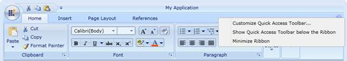
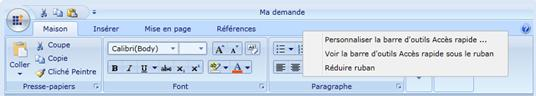
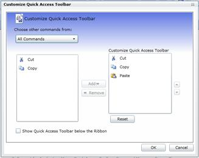
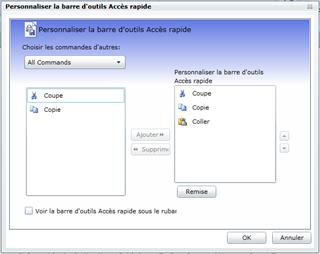

In Silverlight, the easiest way to accomplish localization is to use Resource (.resx) file. For each local or culture you wish to target, you will need a separate set of resources that match that specific local or culture.
The following are the primary steps to do for Localizing Syncfusion Ribbon Control:
· Add Resources for different cultures
· Add Supported Cultures
· Assign Current UI Culture to the Application
Add Resources
To localize Syncfusion Silverlight controls, you need to create resource files for each culture.
The following steps illustrates this:
1. Add Resource (resx) files in the Resources folder for different cultures. (Here, resx files in different culture or invariant culture should be placed in the Resources Folder of your project).
2. Resource files should be named as AssemblyName.CultureName.resx and AssemblyName.resx for invariant culture.
Where,
· AssemblyName – Syncfusion Silverlight Control Assembly Name.
· CultureName – Culture Code of the resource that you want to show in the UI.
If your conversion is only for the invariant culture, the .resx file does not need to contain a culture suffix.
Example:
· Syncfusion.Ribbon.Silverlight.fr-FR.resx – French resource for Syncfusion.Ribbon.Silverlight assembly.
· Syncfusion.Ribbon.Silverlight.resx – Invariant Culture resource for Syncfusion.Ribbon.Silverlight assembly.
Add Supported Cultures
Adding supported cultures for a project is very important in the sample application project before you run the application.
Follow the below steps to localize stings for your culture:
1. In the Solution Explorer, right-click your sample application project and choose Unload Project Then the project will be unavailable.
2. Right-click the project again, and select the Edit SampleProjectName.csproj option.
3. In the .csproj file, find the <SupportedCultures></SupportedCultures> tags. By default, the tags will be empty. So, add the cultures that you want to be supported separating each with a semicolon.
Example: <SupportedCultures>fr-FR </SupportedCultures>
4. Save the project and reload it by right-clicking the SampleProjectName.csproj and choosing Reload SampleProjectName.csproj.
Assign Current UI Culture to the Application
By default, Current Culture will be en-US. You can change the CurrentUICulture. Here, CurentUICulture should be set before the IntializeComponent in your StartUp page (Here, MainPage.xaml.cs) or you can do it in App.xaml.cs in the Application_Startup event.
|
C# (MainPage.xaml.cs)
public MainPage() { System.Threading.Thread.CurrentThread.CurrentUICulture = new System.Globalization.CultureInfo("fr-FR");
InitializeComponent(); } |
Or
|
C# (App.xaml.cs)
private void Application_Startup(object sender, StartupEventArgs e) { System.Threading.Thread.CurrentThread.CurrentUICulture = new System.Globalization.CultureInfo("fr-FR"); this.RootVisual = new MainPage(); } |
The following screenshots illustrates the Ribbon Control with various cultures:

Figure 163: Ribbon Control for Invariant Culture

Figure 164: French Culture assigned as Current UI Culture

Figure 165: Customization Dialog for Invariant Culture

Figure 166: French Culture assigned as Current UI Culture for Customization Dialog